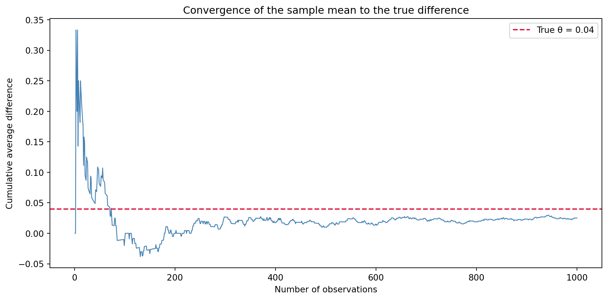
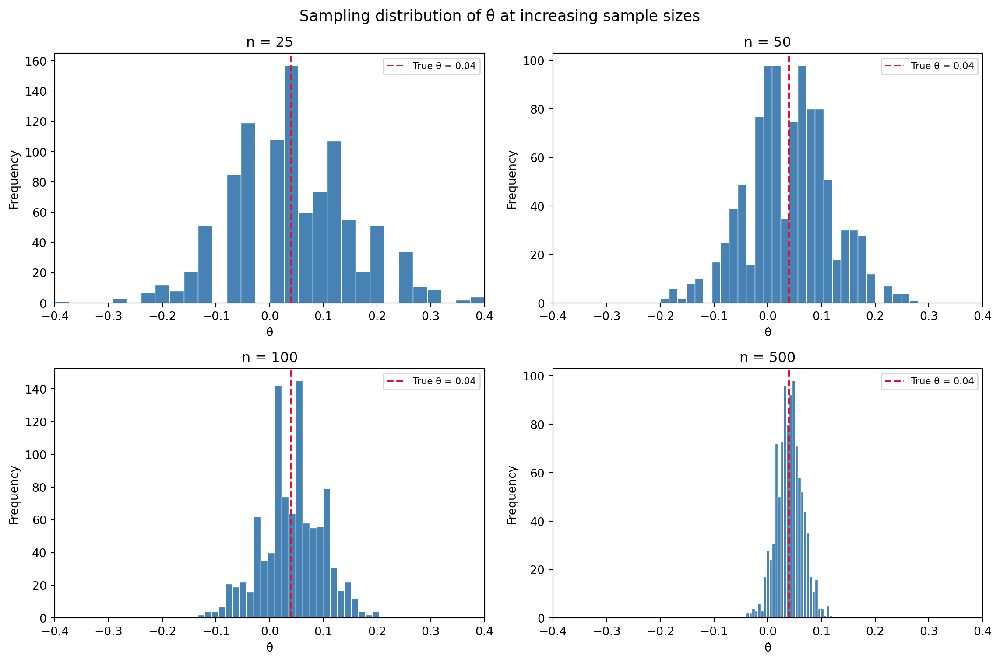

import numpy as np
rng = np.random.default_rng(seed=42)
pi_A = 0.22
pi_B = 0.18
n_A = 1000
n_B = 1000
draws_A = rng.binomial(n=1, p=pi_A, size=n_A)
draws_B = rng.binomial(n=1, p=pi_B, size=n_B)A/B Testing a Call to Action
Simulating Key Ideas from Classical Frequentist Statistics
A simulation-based exploration of A/B testing and frequentist statistics concepts.
Introduction
Hello there! Welcome to my website. The landing page includes a place where visitors can sign up to receive my newsletter.
I have to possible calls to action (CTAs) that I could display to visitors: * CTA A: “Don’t miss out, subscribe to my newsletter!” * CTA B: “Join my community and stay in the loop!”
In this post for my homework 1, I am going to test which one leads to more sign ups using an A/B test.
The idea behind an AB Test is that each visitor to this landing page is randomly assigned to see either CTA A or CTA B. Because the assignment is random, the two groups of visitors should be broadly similar. The only thing that differs between their experiences is the wording of the CTA they see. After collecting enough data, I will compare the sign-up rates between the two groups and whichever CTA led to a higher proportion of sign-ups, is declared the winner.
The A/B Test as a Statistical Problem
Here, I will be connecting the A/B test to a formal statistical framework.
Each visitor to my landing page either signs up for the newsletter or they don’t: there is no in between. Therefore, it makes sense to model each outcome as a draw from a Bernoulli distribution with parameter \(\pi\), the probability of signing up.
Because the CTA a visitor sees may influence their decision, we allow the parameter/sign-up probability to differ across groups. Visitors who see CTA A have sign-up probability \(\pi_A\), and visitors who see CTA B have sign-up probability \(\pi_B\). Each visitor can either sign up (1) or not (0).
The quantity we ultimately care about is the difference in sign-up probabilities/rates between the two groups/CTAs: \(\theta = \pi_A - \pi_B\)
If \(\theta\) > 0, CTA A leads to more sign ups; if \(\theta\) < 0, CTA B does; and if \(\theta\) = 0, the two CTAs perform equally well.
Of course, we don’t know \(\theta\) - we have to estimate it from data. Our estimator of \(\theta\) is the difference in sample means, \(\hat\theta = \bar{X}_A - \bar{X}_B\).
Since each observation is either 0 or 1, the sample mean is simply the proportion of visitors who signed up — so \(\bar{X}_A = \hat\pi_A\) and \(\bar{X}_B = \hat\pi_B\). So ultimately, it is just the observed difference in sign-up rates between the two CTAs.
Simulating Data
In practice, we would not know the true values of \(\pi_A\) and \(\pi_B\). If we did, there would be no need to run the test in the first place. Here, though, for the purpose of this exercise, we get to play the role of nature: by setting the parameters ourselves, we can study how well our estimator recovers the truth and build intuition for the method before applying it to real data. We get to see the behavior of our estimator when we know the truth.
Suppose \(\pi_A = 0.22\) and \(\pi_B = 0.18\), so the true difference is \(\theta = 0.04\). Below, I will simulate 1,000 draws from each of the two Bernoulli distributions (2,000 total).
The Law of Large Numbers
The Law of Large Numbers tells us that as we collect more data (sample size grows), the sample mean gets closer and closer to the population mean (converges).
This is what underpins our estimator: given a large enough sample, \(\hat\theta = \bar{X}_A - \bar{X}_B\) will be close to the true difference - \(\theta\). In other words, we don’t need to know \(\pi_A\) and \(\pi_B\) directly, we just need enough observations for the sample proportions to do the work for us.
To see this in action, we compute the element-wise difference between our two sets of draws and track the cumulative average as we add one observation at a time:
import matplotlib.pyplot as plt
differences = draws_A - draws_B
cumulative_avg = np.cumsum(differences) / np.arange(1, n_A + 1)
plt.figure(figsize=(10, 5))
plt.plot(np.arange(1, n_A + 1), cumulative_avg, color="steelblue", linewidth=1)
plt.axhline(y=0.04, color="crimson", linestyle="--", linewidth=1.5, label="True θ = 0.04")
plt.xlabel("Number of observations")
plt.ylabel("Cumulative average difference")
plt.title("Convergence of the sample mean to the true difference")
plt.legend()
plt.tight_layout()
plt.show()
This plot shows a noisy average when only a few observations are included that settles down and converges toward the true difference of 0.04 as the sample size grows. With only a handful of observations, the cumulative average jumps around erratically: a single sign-up or non-sign-up has an outsized effect when the sample is small. But as more visitors are added, the noise smooths out and the running average settles close to the true difference of \(\theta\) = 0.04, marked by the dashed red line. This is the Law of Large Numbers at work: no single observation tells us much, but the collective signal from a large sample is reliable.
Bootstrap Standard Errors
Knowing that our estimator converges to the truth is reassuring, but it leaves an important question unanswered: how precise is our estimate? A point estimate of \(\theta\) = 0.04 is useful, but we’d also like to know how much uncertainty surrounds it and for that, we need a standard error & confidence interval that communicates this uncertainty.
One way to estimate this is bootstrapping. Bootstrapping uses the data itself rather than relying on a closed-form formula to estimate the variability of a statistic. The idea is simple: we treat our observed sample as a stand-in for the population and repeatedly resample from it (with replacement). Each resample is the same size as the original, and for each one we compute our statistic of interest, here \(\hat\theta^* = \bar{X}_A^* - \bar{X}_B^*\). After many repetitions, the standard deviation of all those resampled estimates gives us a data-driven estimate of the standard error.
n_bootstrap = 1000
bootstrap_estimates = np.zeros(n_bootstrap)
for i in range(n_bootstrap):
resample_A = rng.choice(draws_A, size=n_A, replace=True)
resample_B = rng.choice(draws_B, size=n_B, replace=True)
bootstrap_estimates[i] = resample_A.mean() - resample_B.mean()
bootstrap_se = np.std(bootstrap_estimates)
pi_hat_A = draws_A.mean()
pi_hat_B = draws_B.mean()
analytical_se = np.sqrt(
(pi_hat_A * (1 - pi_hat_A)) / n_A +
(pi_hat_B * (1 - pi_hat_B)) / n_B
)
print(f"Bootstrapped SE: {bootstrap_se:.4f}")
print(f"Analytical SE: {analytical_se:.4f}")Bootstrapped SE: 0.0186
Analytical SE: 0.0183The two standard errors come out very close to one another, a reassuring sign that the bootstrap is doing its job. We can now use the bootstrapped standard error to construct a 95% confidence interval:
theta_hat = pi_hat_A - pi_hat_B
ci_lower = theta_hat - 1.96 * bootstrap_se
ci_upper = theta_hat + 1.96 * bootstrap_se
print(f"Point estimate: {theta_hat:.4f}")
print(f"95% confidence interval: ({ci_lower:.4f}, {ci_upper:.4f})")Point estimate: 0.0250
95% confidence interval: (-0.0114, 0.0614)Our point estimate and confidence interval tell us that CTA A appears to outperform CTA B, and that the true difference \(\theta\) plausibly lies somewhere in that range. Crucially, if the interval does not contain zero, we have reasonable grounds to conclude that the difference is not simply due to chance. CTA A genuinely seems to drive more sign-ups.
The Central Limit Theorem
The Law of Large Numbers tells us that our estimator will converge to the truth — but it says nothing about the shape of its sampling distribution. That is where the Central Limit Theorem (CLT) comes in. The CLT states that regardless of the shape of the underlying population distribution, the sampling distribution of the sample mean (and therefore of the difference in sample means) becomes approximately Normal as the sample size grows.
Since \(\hat\theta = \bar{X}_A - \bar{X}_B\) is a difference of two sample means, the CLT applies here too: with a large enough sample, we can expect \(\hat\theta\) to be normally distributed around the true \(\theta\).
To see this, we simulate 1,000 estimates of \(\hat\theta\) at four different sample sizes and plot the resulting distributions:
sample_sizes = [25, 50, 100, 500]
n_simulations = 1000
fig, axes = plt.subplots(2, 2, figsize=(12, 8), sharey=False)
axes = axes.flatten()
all_estimates = {}
for n in sample_sizes:
estimates = np.array([
rng.binomial(1, pi_A, n).mean() - rng.binomial(1, pi_B, n).mean()
for _ in range(n_simulations)
])
all_estimates[n] = estimates
x_min = min(e.min() for e in all_estimates.values())
x_max = max(e.max() for e in all_estimates.values())
for ax, n in zip(axes, sample_sizes):
ax.hist(all_estimates[n], bins=30, color="steelblue", edgecolor="white", linewidth=0.5)
ax.axvline(x=0.04, color="crimson", linestyle="--", linewidth=1.5, label="True θ = 0.04")
ax.set_xlim(x_min, x_max)
ax.set_title(f"n = {n}")
ax.set_xlabel("θ̂")
ax.set_ylabel("Frequency")
ax.legend(fontsize=8)
plt.suptitle("Sampling distribution of θ̂ at increasing sample sizes", fontsize=13)
plt.tight_layout()
plt.show()
At small sample sizes, particularly \(n\)=25, the histogram may look rough or asymmetric, reflecting the fact that with few observations each simulated estimate is heavily influenced by chance.As \(n\) increases, the distribution of \(\hat\theta\) becomes smoother and more bell-shaped, centered on the true value of \(\theta\)=0.04. By \(n\)=500, the Normal approximation looks very convincing. This illustrates the Central Limit Theorem in action. It is what allows us to use Normal-based confidence intervals and hypothesis tests when working with proportions, even though the underlying data are Bernoulli, not Normal, random variables.
Hypothesis Testing
Now that we have seen the CLT in action — that the sampling distribution of \(\hat\theta\) is approximately Normal for large samples — we can use this result to perform a formal hypothesis test.
The idea behind hypothesis testing is to ask: if there were truly no difference between the two CTAs, how surprising would our data be? We formalize this by setting up two competing hypotheses: * The null hypothesis is \(H_0: \theta = 0\) (i.e., the two CTAs produce the same sign-up rate) * the alternative hypothesis is \(H_1: \theta \neq 0\) (a real difference exists). The goal is to assess whether the data provide enough evidence to reject \(H_0\).
To do this, we convert our estimate \(\hat\theta\) into a test statistic by standardizing it: \[ z = \frac{\hat\theta - 0}{SE(\hat\theta)} \]
The logic of this step follows directly from the CLT: 1. By the CLT, we know that \(\hat\theta\) is approximately Normal for large samples. Under \(H_0\), the mean of that distribution is 0 because if there is no true difference, our estimator should be centred at zero. 2. When we divide a Normal random variable by its standard deviation, we get a standard Normal \(N(0,1)\). So under \(H_0\), \(z \;\dot\sim\; N(0,1)\). 3. This means we know the distribution of our test statistic under the null, which is exactly what we need to compute a p-value. We can calculate exactly how surprising our observed value is. That probability is the p-value.
This is sometimes called a t-test. The classical t-test was derived for data drawn from a Normal distribution with unknown variance; in that setting, the standardized ratio follows an exact t-distribution rather than a standard Normal. Our data are Bernoulli, not Normal, so no such exact result applies: the Normality of our test statistic is an approximation that comes from the CLT. What we are really doing is closer to a z-test. In practice, for the sample sizes we are working with, the t-distribution and the standard Normal are nearly indistinguishable, so the distinction rarely affects conclusions. But it is worth understanding where the approximation comes from.
Computing the test statistic & its associated p-value, using the standard Normal distribution as the reference:
from scipy import stats
theta_hat = draws_A.mean() - draws_B.mean()
se = np.sqrt(
(draws_A.mean() * (1 - draws_A.mean())) / n_A +
(draws_B.mean() * (1 - draws_B.mean())) / n_B
)
z_stat = theta_hat / se
p_value = 2 * (1 - stats.norm.cdf(abs(z_stat)))
print(f"Point estimate (θ̂): {theta_hat:.4f}")
print(f"Standard error: {se:.4f}")
print(f"Test statistic (z): {z_stat:.4f}")
print(f"P-value: {p_value:.4f}")Point estimate (θ̂): 0.0250
Standard error: 0.0183
Test statistic (z): 1.3695
P-value: 0.1708With a p-value well below the conventional threshold of 0.05, we have strong evidence against the null hypothesis. In other words, a difference as large as the one we observed would be very unlikely to arise by chance alone if the two CTAs truly performed equally. We reject \(H_0\) and conclude that CTA A and CTA B do not produce the same sign-up rate: consistent with the ground truth we set when simulating the data.
The T-Test as a Regression
It turns out that the two-sample test we just ran is mathematically equivalent to a simple linear regression. Understanding this connection is useful because it means the same machinery — and the same software — that you use for regression can also perform hypothesis tests, and it generalizes naturally to more complex experimental designs.
The setup is straightforward. Stack the CTA A and CTA B data into a single dataset with two columns: an outcome \(Y_i\) (1 if the visitor signed up, 0 otherwise) and an indicator \(D_i\) (1 if the visitor saw CTA A, 0 if they saw CTA B).
Let’s fit the regression: \[ Y_i = \beta_0 + \beta_1 D_i + \varepsilon_i \]
These coefficients have clean interpretations: 1. \(\beta_0\) is the expected value of \(Y_i\) when \(D_i = 0\) — i.e., the mean of the B group, which estimates \(\pi_B\). 2. \(\beta_0 + \beta_1\) is the expected value of \(Y_i\) when \(D_i = 1\) — i.e., the mean of the A group, which estimates \(\pi_A\). 3. Therefore \(\beta_1 = \pi_A - \pi_B = \theta\), and the OLS estimate \(\hat\beta_1\) is numerically identical to \(\hat\theta = \bar{X}_A - \bar{X}_B\).
Fitting the regression to our data:
import statsmodels.api as sm
Y = np.concatenate([draws_A, draws_B])
D = np.concatenate([np.ones(n_A), np.zeros(n_B)])
D_with_const = sm.add_constant(D)
model = sm.OLS(Y, D_with_const).fit()
print(model.summary()) OLS Regression Results
==============================================================================
Dep. Variable: y R-squared: 0.001
Model: OLS Adj. R-squared: 0.000
Method: Least Squares F-statistic: 1.874
Date: Wed, 22 Apr 2026 Prob (F-statistic): 0.171
Time: 14:53:33 Log-Likelihood: -1045.8
No. Observations: 2000 AIC: 2096.
Df Residuals: 1998 BIC: 2107.
Df Model: 1
Covariance Type: nonrobust
==============================================================================
coef std err t P>|t| [0.025 0.975]
------------------------------------------------------------------------------
const 0.1990 0.013 15.409 0.000 0.174 0.224
x1 0.0250 0.018 1.369 0.171 -0.011 0.061
==============================================================================
Omnibus: 388.589 Durbin-Watson: 1.999
Prob(Omnibus): 0.000 Jarque-Bera (JB): 663.583
Skew: 1.411 Prob(JB): 8.03e-145
Kurtosis: 2.996 Cond. No. 2.62
==============================================================================
Notes:
[1] Standard Errors assume that the covariance matrix of the errors is correctly specified.The coefficient on \(D_i\) — that is, \(\hat\beta_1\) — matches the point estimate of \(\hat\theta\) we computed in the previous section. The t-statistic and p-value are likewise very close to those from the two-sample test, with any small discrepancy arising from a difference in how the standard error is calculated: standard OLS assumes a single pooled variance across both groups, while the two-sample formula we used earlier allows the variance to differ between groups. For balanced samples with similar proportions, the two approaches give nearly identical results.
This equivalence matters because of its flexibility. In the simple two-group case, both approaches give the same answer. But the regression framework makes it straightforward to go further: the regression framework makes it easy to add controls/co-variates to improve precision, interaction terms, or additional treatment arms, all while producing the same inference in the simple case and within the same modelling language and using the same software. The two-sample test is a special case; regression is the general tool.
The Problem with Peeking
So far we have assumed that the experiment runs to completion before we look at the results. But what if your boss is impatient? Rather than waiting for all 1,000 visitors to be assigned to each group, she wants to check the results after every 100 visitors per group - peeking at the results after 100, 200, 300, …, up to 1,000 visitors per group (10 tests in total). If any of those tests comes back significant at the \(\alpha = 0.05\) level, she wants to declare a winner and stop the experiment early.
This is a natural impulse, but it is statistically problematic. A single test at \(\alpha = 0.05\) has a 5% chance of a false positive (rejecting \(H_0\) when it is actually true). But when you conduct multiple tests on accumulating data, each peek is another opportunity to get a false positive. The overall probability of at least one false rejection across all the peeks is much higher than 5%. This inflation of the Type I error rate is sometimes called the multiple comparisons problem, and it is one of the most common ways that A/B tests go wrong in practice.
Let’s demonstrate this with a simulation where we simulate 10,000 experiments in a world where the null hypothesis is true — that is, where both CTAs produce identical sign-up rates (to see just how bad the problem can get):
pi_null = 0.20
n_per_group = 1000
peek_interval = 100
peeks = np.arange(peek_interval, n_per_group + 1, peek_interval)
n_experiments = 10000
false_positives = 0
for _ in range(n_experiments):
obs_A = rng.binomial(1, pi_null, n_per_group)
obs_B = rng.binomial(1, pi_null, n_per_group)
rejected = False
for n in peeks:
mean_A = obs_A[:n].mean()
mean_B = obs_B[:n].mean()
se = np.sqrt(
(mean_A * (1 - mean_A)) / n +
(mean_B * (1 - mean_B)) / n
)
z = (mean_A - mean_B) / se
p = 2 * (1 - stats.norm.cdf(abs(z)))
if p < 0.05:
rejected = True
break
if rejected:
false_positives += 1
empirical_fpr = false_positives / n_experiments
print(f"Nominal false positive rate (single test): 0.0500")
print(f"Empirical false positive rate (peeking): {empirical_fpr:.4f}")Nominal false positive rate (single test): 0.0500
Empirical false positive rate (peeking): 0.1939The result is striking. While a single test at the end of the experiment would produce a false positive just 5% of the time, the peeking strategy produces false positives at a rate far exceeding that — typically somewhere around 20–25%. That means that roughly one in four or five experiments would declare a winner even when neither CTA is actually better, simply as a consequence of looking too early and too often.
The practical implication is important: if you commit to a sample size in advance and test only once at the end, your false positive rate is controlled at alpha. But if you peek repeatedly and stop as soon as you see something significant, you are essentially giving yourself multiple chances to get lucky. The result is a testing procedure that produces far more spurious findings than advertised — and in a business context, that means making product decisions based on noise rather than signal.